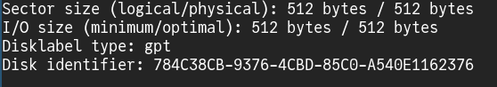

Computador
Computador é uma máquina que executa funções e interage com o usuário, recebendo e despachando informação
A troca de informação entre humano e computador é feita por meio de dispositivos de interface (periféricos), como mouse, teclado, tela e alto-falantes.
As funções executadas por um computador podem ser programadas por um humano. Nesse caso, um conjunto de instruções escritas, armazenadas e executadas por um computador é nomeado "programa".
Essas funções incluem, comumente, editar textos e documentos, assistir vídeos, jogar, desenhar e outras coisas. Contudo, em uma análise mais interna, o computador é uma máquina que processa informações registradas como estados binários.
Um estado binário é aquele que tem duas possibilidades, comumente representadas como '0' e '1'. Toda informação que o computador processa (um número, um caractere, uma imagem, um vídeo ou qualquer outra coisa) consiste em uma sequência de estados binários.
Como o formato binário não é compreensível aos sentidos humanos, os estados binários são convertidos em outros formatos de informação e emitidos ao usuário por meio de periféricos, assim como a interação não binária do usuário com os periféricos é convertida em informação binária ao ser recebida pelo computador.
Ao digitar um texto usando o teclado, nos guiamos pelas letras que vemos, mas, ao pressionar uma tecla, o que é enviado ao computador é uma sequência binária, ou, mais precisamente, uma sequência de variação na diferença de potencial da corrente elétrica, que oscila entre dois estados (representado por uma sequência de 0 e 1), a qual identifica determinada letra ou símbolo. A máquina não vê a letra como o usuário a vê.
Para mostrar ao usuário qual letra ele teclou e qual letra foi inserida no documento de texto, a máquina, ao receber a sequência binária do teclado, exibe, na tela, a imagem de um caractere associada àquela seqência.
Além de instruções (executáveis), a memória de um computador pode armazenar dados não executáveis. A e a unidade de estado sólido (SSD) são dispositivos que realizam essa função.
Memória de acesso aleatório (RAM) é uma infraestrutura para armazenar informações que podem ser processadas diretamente pelo computador. Contudo, o conteúdo lá presente é comprometido caso a unidade seja privada de corrente elétrica por algum período.
Unidade de estado sólido (SSD) é outro tipo de memória, menos volátil. A integridade das informações presentes nesse dispositivo é mantida mesmo sem corrente elétrica. No entanto, elas não podem ser diretamente transferidas e recebidas do processador.
Para executar um programa ou para interagir com ima informação presente em uma unidade de estado sólido, ela é, primeiro, transferida à memória volátil.
Sistema operacional
Um conjunto de programas que interagem de forma organizada e funcional entre si é denominado "sistema operacional". Android, Windows e GNU/Linux são exemplos.
O sistema operacional é iniciado quando o computador é ligado. Após os dispositivos serem irrigados com corrente elétrica e estarem prontos para funcionar, o processador executa instruções iniciais que buscam pelo núcleo de algum sistema operacional presente em um dispositivo de memória não volátil e o transferem para a memória volátil. Após isso, o gerenciamento da máquina passa a ser realizado por esse núcleo e o sistema inicia.
Um núcleo (ou kernel), um tipo de software que gerencia os dispositivos mecânicos de um computador (como tela, disco rígido, saída de audio e RAM) e provê interfaces para que outros programas acessem esses mecanismos. Um exemplo de núcleo é o Linux.
Distribuições linux
Distribuições linux são sistemas operacionais que associam um ecossistema de programas ao núcleo Linux.
Linux Mint foi a primeira distro que eu usei, se desconsiderarmos o Android e o Termux. A instalação é bem simples e essa distribuição oferece uma experiência similar à do Windows.
Atualmente, uso Void Linux.
Instalação
Vou descrever o processo de instalação do Void Linux (que é menos intuitivo que os de outras distros, como Ubuntu e Linux Mint).
A instalação pode ser feita a partir de:
A mídia de instalação de uma distribuição linux é otimizada para caber em um portátil, como pendrive ou CD, para teste ou para instalação definitiva do sistema. É um sistema já fabricado e empacotado em um arquivo (geralmente do tipo iso), pronto para ser gravado em um pendrive. Isso pode ser feito a partir de vários sistemas que não são distribuições linux.
Em alguns casos em que já existe uma distribuição linux em uso, a mídia de instalação é dispensável.
Particionamento
É necessário designar uma partição que conterá aquilo que o carregador de boot inicial executará na inicialização do computador. Isso pode ser o núcleo Linux ou um gerenciador de boot. O formato dessa partição deve ser suportado pelo carregador de boot inicial. No geral, o FAT32 é a escolha, por ser suportado pelo padrão UEFI e por diversas fabricantes.
Caso não haja gerenciador de boot, o núcleo linux residirá nela, mas eu nunca tentei isso.
Caso o gerenciador de boot esteja nela, o núcleo Linux poderá estar nessa partição também, mas eu prefiro colocá-lo em uma partição separada.
A partição do núcleo Linux deve ter formato suportado pelo gerenciador de boot que o inicializará (de novo, o FAT32 é suportado na maioria dos casos).
A partição em que residirá o restante do sistema poderá ter qualquer formato suportado pelo Linux. Eu prefiro o BTRFS ou o EXT4.
Caso você não seja familiar com sistemas baseados em Linux, isso talvez pareça estranho, mas o kernel Linux, ao reconhecer um dispositivo, associa ele a um arquivo. Esse arquivo é uma interface que existe na memória para que programas interajam com o kernel ou com dispositivos por intermédio do kernel.
Quando o kernel Linux de meu computador detecta o pendrive no qual instalarei o Void Linux, ele associa esse dispositivo à um arquivo. Para proceder com a instalação, preciso descobrir o nome desse arquivo.
Para listar todos os dispositivos de armazenamento e seus respectivos nomes, executo o comando
fdisk -l
.
Repare que existem 3 dispositivos de armazenamento detectados pelo meu kernel no momento ([nvme0n1], [/dev/sda] e [/dev/sdb]), e que eles estão contidos no diretório [ /dev ].
Junto ao nome de cada dispositivo, estão informações sobre ele. Por exemplo, ao lado do dispositivo associado ao arquivo [/dev/sdb], é possível perceber que ele possui capacidade de armazenamento de 57,3 GiB. Mais abaixo, podemos ver o modelo dele (um SanDisk 3.2Gen1). Esse é o meu pendrive.
Perceba que as partições da unidade de armazenamento também estão associadas a arquivos e que o nome de cada partição é o nome da unidade de armazenamento acrescida de um sufixo. Por exemplo, [/dev/sdb1] é a primeira partição do meu pendrive, [/dev/sdb2] é a segunda, e assim por diante.

Agora que eu sei que meu pendrive está associado ao arquivo [/dev/sdb], posso executar o comando
cfdisk /dev/sdb
para particioná-lo. Isso resultará na seguinte interface